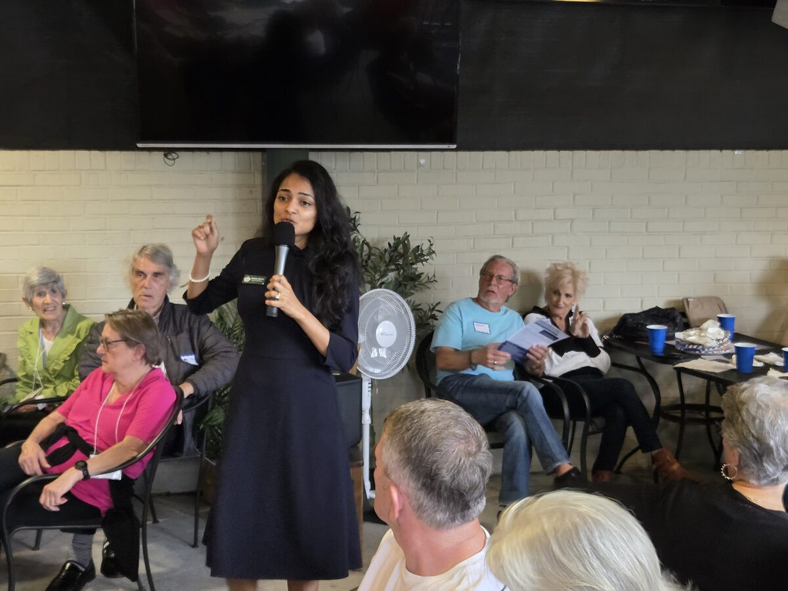
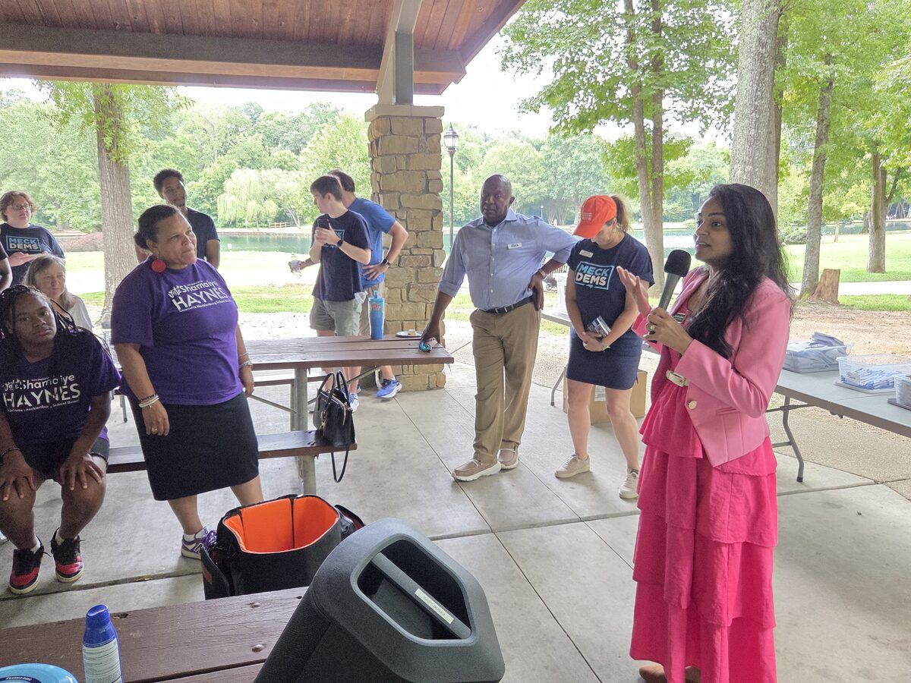
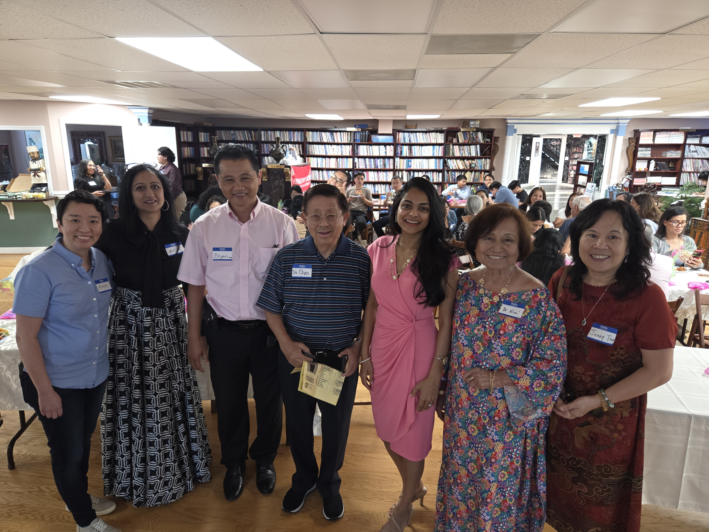
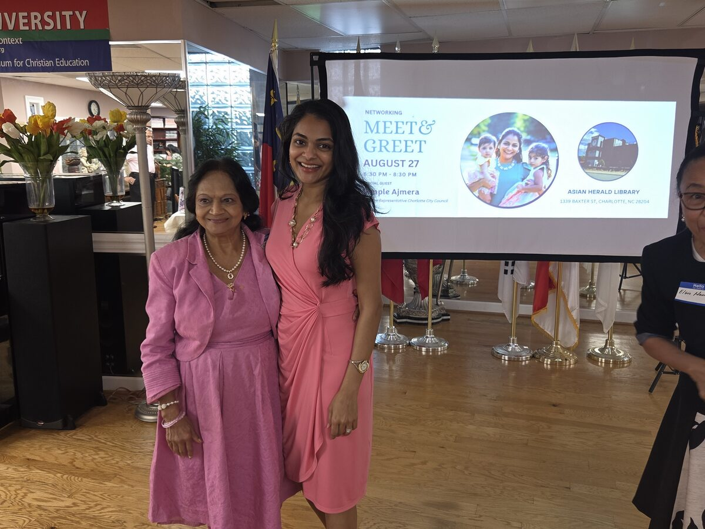

A Proven Track Record of Public Service & Fiscal Integrity
Dimple Ajmera is a Working Mother, four-term Charlotte City Councilwoman, and Certified Public Accountant (CPA).
Dimple immigrated to the United States with her family at age 16. Overcoming language barriers, she learned English, graduated from Southern High School in Durham, earned her accounting degree from the University of Southern California, and became a Certified Public Accountant managing multi-million dollar budgets at major corporate institutions including Deloitte and TIAA.
Driven by public service values, Dimple left corporate finance to serve Charlotte. On City Council, she has championed public safety, CMPD officer family healthcare benefits, workforce housing bonds, clean water policies, and small business support.
Honors & Awards
-
2019 Blue Sky AwardAwarded for environmental public policy work by Clean Air Carolina
-
NAACP Excellence in Leadership AwardRecognized for civil rights and community advocacy
-
Charlotte Business Journal 40 Under 40Recognized for outstanding leadership and fiscal management
-
Global Service Award by Rotary InternationalHonored for public service and community dedication
Dimple Ajmera on Council Hub
Search 8+ years of public service (January 17, 2017 – Present). Ingested directly from the Granicus Legistar Web API and Charlotte GOV Channel — featuring instant fuzzy search, roll-call voting records, timecoded spoken transcripts, and campaign finance disclosures.
Community & Activism Photo Gallery
Click any photo to open in high-resolution full-screen view with event details.








Dimple in Action & Live Social Feeds
Watch Council Member Dimple Ajmera discuss city policy and follow her live updates on Instagram & LinkedIn.
Data Center Expansion & Water Demand
Dimple outlines policies to protect Charlotte's municipal water supply.
Proactive Environmental Stewardship
Championing smart, resilient infrastructure for future generations.
Safe Streets & Red Light Safety
Addressing traffic crashes and investing in safer pedestrian crossings.
Latest Articles from @dimpleajmera
Protecting Charlotte's Water Supply: Policy Directives for Data Center Growth
Why we need rigorous guardrails on industrial water consumption and energy loads to preserve our regional reservoirs and green canopy for the next fifty years.
Delivering Results: Expanding Down-Payment Assistance for Charlotte Families
Breaking down how municipal housing bonds and targeted equity funds are helping nurses, teachers, and municipal workers build generational homeownership.
Standing with First Responders: Healthcare Coverage for CMPD Officer Families
A personal look at our unanimous city council victory securing lifetime healthcare benefits for the families of fallen officers killed in the line of duty.
Subscribe to Dimple's Official Substack
Receive direct updates on city council votes, environmental town halls, economic reports, and candidate news straight to your inbox.
Dimple’s Core Platform
Build a Safe Charlotte Regardless of Your ZIP Code
Dimple works tirelessly to build a safe Charlotte for all families. She championed providing city healthcare coverage for families of CMPD officers killed in the line of duty, which was unanimously approved by City Council.
Sustainable Infrastructure & Resilient Future
Winner of the 2019 Blue Sky Award, Dimple called for a pause on new data center developments near neighborhoods to safeguard Charlotte’s natural water supply and tree canopy.
Expand Access to Affordable Housing
Dimple continues to champion municipal housing bonds, down-payment assistance programs for first-time homebuyers, and anti-displacement strategies keeping long-term residents in their homes.
Create Economic Opportunities Across All City Districts
As a CPA with corporate finance background at TIAA, Dimple applies rigorous fiscal oversight while expanding access to capital and municipal contracts for local small businesses.
Dimple Ajmera on Council: Legislative Hub & Wiki
Access Council Member Dimple Ajmera's official Charlotte City Council voting records, meeting agendas, resolutions, and Granicus Legistar archives in an interactive, searchable knowledge hub.
Proudly Endorsed By Community Leaders
"Ajmera continues to be a thoughtful and dedicated representative with a knack for hearing and uplifting the community’s concerns. We recommend Ajmera."
"Councilwoman Ajmera championed providing city healthcare coverages for families of employees killed in the line of duty after the death of CMPD Officer Joshua Eyer... Due to Councilwoman Ajmera, this benefit was unanimously approved by all members of council."


Photo Title
Detailed event description goes here.